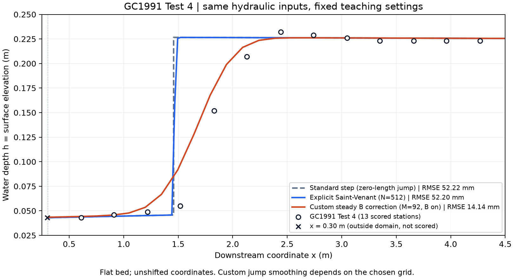

第一組 · GROUP 01
水躍之深度平均模擬
Saint-Venant · Boussinesq 型 · 剪切淺水方程
比較不同方程的平均水面與能量描述，分辨物理修正、數值平滑與邊界條件的作用。
SV／穩態 B 教材可用；SSWE 程式待教師交付。
第一組目標與工作 →Undergraduate Research · 2026
用水理公式解釋水面，用共同案例比較模型。從水平渠道的入門實驗，逐步走向陡坡轉緩坡的水躍問題。
Two teams / Shared cases
第一組研究深度平均方程，第二組研究工程水理方法。從相同輸入出發，交換資料並共同解釋差異。
第一組 · GROUP 01
Saint-Venant · Boussinesq 型 · 剪切淺水方程
比較不同方程的平均水面與能量描述，分辨物理修正、數值平滑與邊界條件的作用。
SV／穩態 B 教材可用；SSWE 程式待教師交付。
第一組目標與工作 →第二組 · GROUP 02
Python standard step · HEC-RAS
以比能、比力與共軛水深解釋水面線，檢查工程設定與斷面間距對水躍定位的影響。
Python 教材可用；HEC-RAS 配對案例待教師交付。
第二組目標與工作 →共用 Test 4 輸入、原始量測站位與數值資料，先做 Python–SV 基準，再加入其餘可用方法。
組別更新 2026.10.14。教師提供並驗收核心程式；學生重現、修改指定分析與輸入、製圖及解釋。
01 / Project work
先完成一個固定案例，再擴展比較範圍。每項工作都有自己的案例、方法與交付成果。
在同一個 Notebook 中，重現 Python standard-step、Basilisk Saint-Venant 與自訂模式，對照 Test 4 的實驗水面。

連結比能、比力與共軛水深，建立急流及緩流分支，再檢查陡坡轉緩坡的水躍位置。
對齊幾何、流量、糙率與尾水，比較 mixed-flow 結果及斷面間距對水躍定位的影響。
教師另版開放後，先做基準加兩個尾水變體，共 3 案例，整理水躍位置、下游水深與總水頭損失。
02 / Research questions
主題是渠道從陡坡轉為緩坡時，急流如何轉成緩流，以及工程計算能解釋到哪裡。
尾水、底床坡度與邊界條件如何改變水躍位置？不同方法定位水躍的方式有何差異？
共軛水深與總水頭損失如何連到計算結果？哪些差異可以由水理假設解釋？
分清楚程式重現、模型間一致與實驗驗證。圖形接近，仍需檢查數值設定與適用範圍。
03 / Semester roadmap
兩組平行進行，在共同案例交會。週次由教師對照實際進度；後續案例須完成教師交付。
| 週次 | 第一組 深度平均模擬 | 第二組 工程水理分析 | 共同交付 |
|---|---|---|---|
| 1–2 | 重現 SV／B 型，認識模式差別 | 重現 Python，認識 HEC-RAS 流程 | 平台確認；輸入、座標、單位表 |
| 3–4 | 質量／動量、靜水壓、穩態 B 與剪切能概念 | 比能／比力、共軛水深與標準步法手算 | 一頁方程假設，交換解說 |
| 5–6 | 平均水面與診斷；教師準備 SSWE | 建立教師提供的 HEC-RAS 水平案例 | 固定 C1，核對邊界與阻力 |
| 7–8 | 解讀既有時間／網格證據；SSWE 就緒後重現 | 指定的斷面間距對照與位置區間 | 期中疊圖、位置定義、待解差異 |
| 9–10 | 已交付則加入 SSWE，否則深化 SV／B 分析 | 改進讀檔／圖表與工程解釋 | 固定量測點、RMSE 與水頭差規則 |
| 11–12 | 新案例版中的已驗收模式 | 新案例版中的核准尾水變動 | C2 共 3 案例；未交付則完成 C1 分析 |
| 13–14 | 綜合方程、平滑與時間平均的作用 | 綜合邊界、離散與工程假設的作用 | 完整比較表；就緒且時間允許才延伸 |
| 15–16 | 深度平均報告；重現第二組分析 | 工程分析報告；重現第一組分析 | 缺項／失敗／限制表，共同結論初稿 |
| 17–18 | 報告與簡報定稿 | 報告與簡報定稿 | 兩份報告、共同資料庫與重現指南 |
查看共同交付與完成判準 → 未交付新案例時先完成固定基準；新閉合公式、機器學習及大規模三維 CFD 不列為必做成果。
04 / Learning resources
先安裝，再跑通一本 Notebook。需要時回到公式、程式導讀與問題排解。